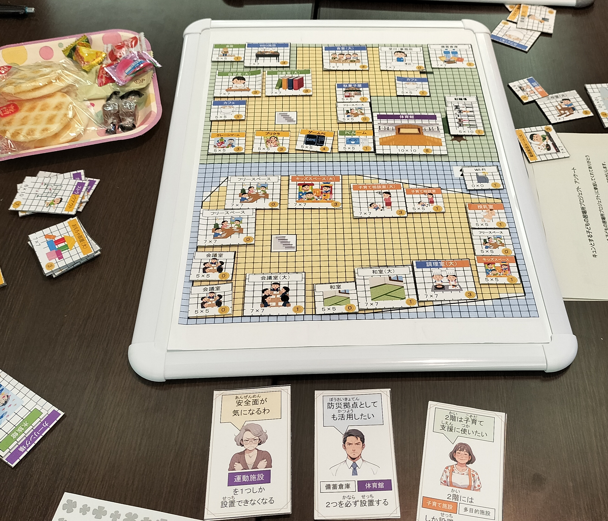

製作実績
業種・規模の異なる依頼元での製作実績があります。
事例1：東京社労士会様 — 福利厚生をゲームにする
知っているようで、よく知らない『会社の福利厚生』。社労士会様の依頼で、福利厚生制度を分かりやすく体験できるゲームを制作しました。
課題：福利厚生制度の説明資料が複雑で、社員に伝わりにくい。
提案：制度の選択肢を「カード」にし、ライフイベントごとに使える制度を選ぶ体験型ゲームに。
成果：プレイ後、参加者から「初めて制度を活用するイメージが湧いた」との声。
この福利厚生ゲームを、ブラウザ版『はっぴーかんぱにー』として今すぐ遊べます。
 ▶
▶
🎮 無料で遊べる
めざせ！はっぴーかんぱにー
家族・健康・時間・お金・成長のバランスを取りながら、しあわせな会社を目指すボードゲーム。ゲーム化事業でどんなアウトプットができるのか、実際に体験いただけます。
ゲームで遊ぶ ▶※ 別タブで開きます。インストール不要、スマホ・PC対応。
事例2：電気通信事業会社 購買部門様 — 業務をゲームにする
社会とのつながりが見えにくく、実績の数値化も難しい『購買部門』。業務そのものを社会課題への取り組みに繋げ、ゲームで表現しました。
課題：購買部門の業務価値が社内に伝わらず、評価しづらい。
提案：購買業務を社会課題（環境・人権・地域貢献）と接続させ、選択がもたらす波及効果を可視化。
成果：自部門の業務が社会に与えるインパクトを、社員自身が言語化できるように。
事例3：藤沢市 青少年課様 — 考え方をゲームにする

子どもたちの希望や考えを政策に反映させるため、「居場所づくりゲーム」を制作。子どもたちが自分の理想の居場所を表現できる仕組みにしました。
課題：子どもの本音は、アンケートや座談会では引き出しにくい。
提案：「どんな居場所がほしいか」をゲームのカード選択で表現できる仕掛けに。
成果：従来手法では出てこなかった子どもたちの考えが、ゲームを通じて表出。